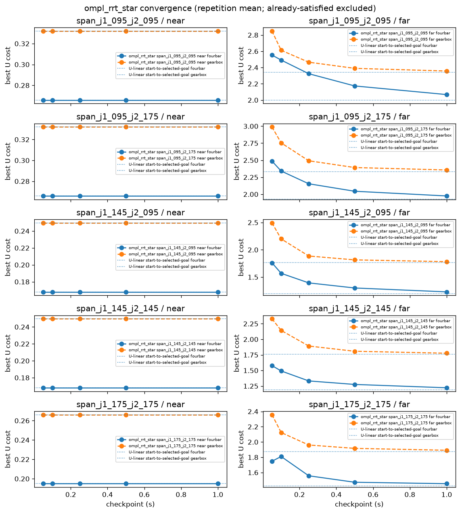
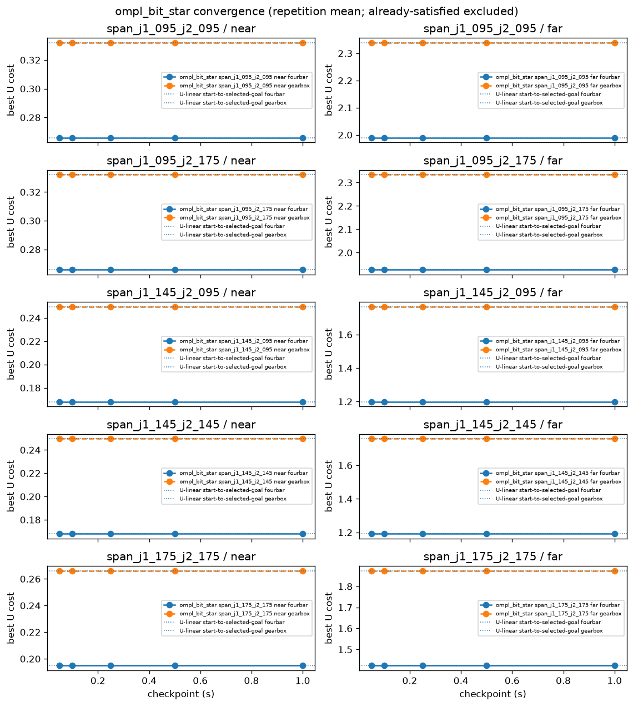
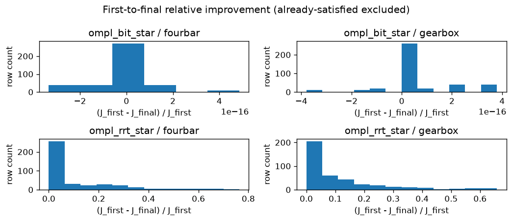
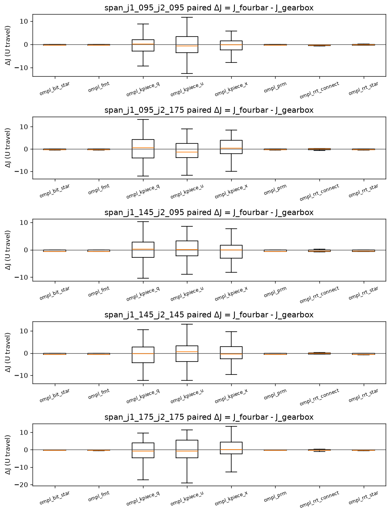
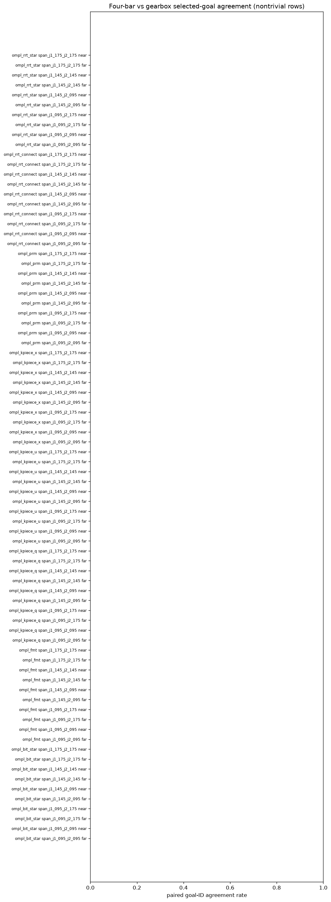
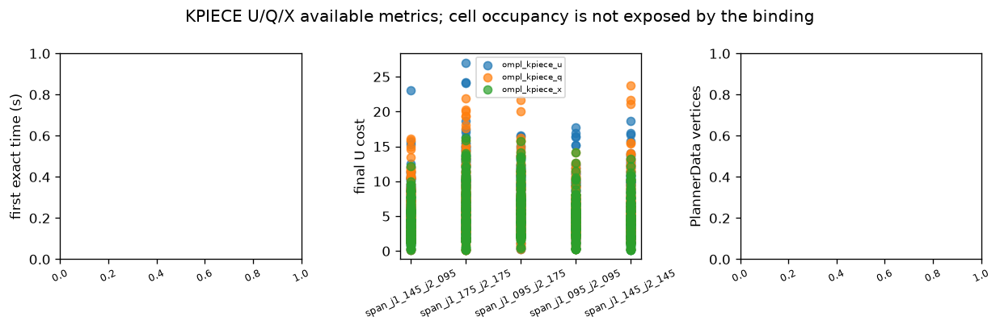
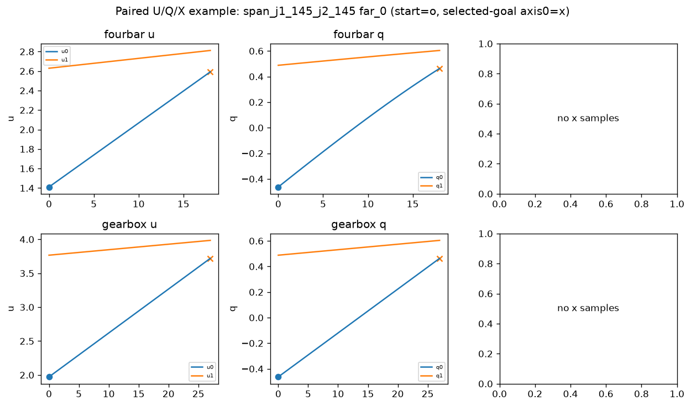

This clarification report reads frozen V4.2C Stage C rows only. Already-satisfied tasks are separated from search evidence. Figures are descriptive and are not a global ranking.
No-inference: OMPL planner-geometry portfolio; descriptive only; no mechanism performance inference.
The certified free-space actuator box and the direct U-linear connector are a strong reference and a weak routing challenge. V4.2C diagnoses planner geometry, finite-time convergence, and U/Q/X projection sensitivity. It does not establish obstacle-routing superiority or general application performance. Valid direct connections are not disabled.
schema v4.2c_r.frozen_data_report.v1
· source V4.2C files_digest 99ec523a706632391c85e16cae505e6cd11a6f14d15682eb711515aefcf76c93
· stage stage_c
· config digest d3fcdf4bbcc1275ac5e39b74c87104591fe54841b8692081e31f70dbfd9dbe5e
Sprint V4.2C is closed. These figures re-present frozen rows. They do not rerun OMPL, change the physical contract, or support a universal planner or mechanism claim.
Completed rows: 6200. Already satisfied (not search evidence): 1240. Nontrivial completed rows: 4960.
KPIECE cell occupancy is unavailable from the OMPL 2.0.1 binding
(kpiece_cell_stats_not_exposed_by_binding). Occupancy heatmaps are not scientific
evidence here.
ompl_rrt_star: actuator travel in raw U (Euclidean); cumulative checkpoints in seconds; PlannerData vertices/edgesompl_bit_star: actuator travel in raw U (Euclidean); cumulative checkpoints in seconds; batch/queue events stay in family_metricsompl_fmt: actuator travel in raw U (Euclidean); independent sample-count runs (not cumulative wall-clock continuation)ompl_kpiece_u: normalized-U projection cells; not comparable to tree verticesompl_kpiece_q: normalized mounted-Q projection cells; physical state remains Uompl_kpiece_x: normalized Cartesian-X projection cells; physical state remains Uompl_prm: roadmap vertices/edges; architecture control, not primary evidenceompl_rrt_connect: first-feasible tree control; feasible cost is not asymptotic optimalityompl_pdst_u: optional geometric PDST; reported as unsupported unless a retained capability/result row says otherwiseunit: actuator travel in raw U (Euclidean); cumulative checkpoints in seconds; PlannerData vertices/edges

unit: actuator travel in raw U (Euclidean); cumulative checkpoints in seconds; batch/queue events stay in family_metrics

unit: dimensionless (J_first - J_final) / J_first

unit: actuator travel in raw U (paired difference)

unit: agreement rate (dimensionless)

unit: normalized-U projection cells; not comparable to tree vertices

unit: PlannerData vertices vs seconds; not a within-run growth path
unit: U, mounted Q, Cartesian X path coordinates

Selection rule: nontrivial far_0 on span_j1_145_j2_145; lowest four-bar request_digest among paired trajectories
| mechanism | planner | digest | goal | U length | Q length | X length |
|---|---|---|---|---|---|---|
| fourbar | ompl_bit_star | 03cb561e331009b5a152af4235920674c27aeceef94ddc5c6c24f01fa498883d | 1.1953490171841805 | 0.9339649339848761 | 1.8964394836323752 | |
| gearbox | ompl_bit_star | 2122c38a8530d62f0f5423d5a5a47bb3e6ba33fa296a7bb8119604c261e05f76 | 1.7613447071587176 | 0.9339527149387863 | 1.8962494439677673 |
Regenerated exclusively from frozen V4.2C machine-readable stage files. HTML contains no calculations absent from summary.json.